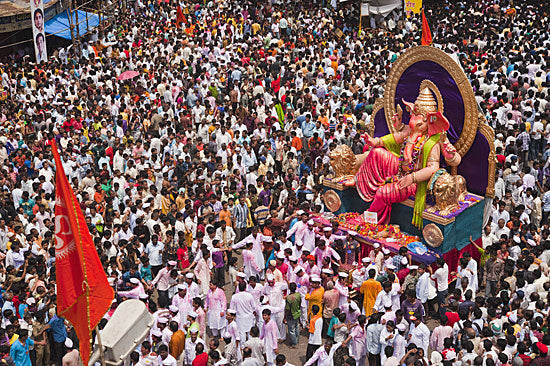

The Land of Warriors & Wonders
महाराष्ट्र
From the mighty Maratha Empire and Ajanta's ancient frescoes to Mumbai's towering skyline — Maharashtra is India's beating heart of history, culture, and ambition.

Overview
Maharashtra, meaning "Great Nation" in Sanskrit, is India's third-largest state by area and second-most populous. Situated on the western Deccan Plateau and the Konkan coast, it is the financial, commercial, and entertainment capital of India — home to Mumbai, the city that never sleeps.
The state was carved out of Bombay State on 1 May 1960 during the Samyukta Maharashtra movement, uniting Marathi-speaking regions into one administrative unit. Its landscape ranges from the sun-drenched Konkan coast to the rugged Sahyadri mountains and the vast Vidarbha plateau.
With five UNESCO World Heritage Sites, the birthplace of the Maratha Empire, and the largest economy of any Indian state, Maharashtra is as historically rich as it is economically dynamic.
State Symbols
-
Animal:
Giant Squirrel (Shekru) -
Bird:
Yellow-footed Green Pigeon (Hariyal) -
Flower:
Jarul (Pride of India) -
Tree:
Mango (Mangifera indica) -
Sport:
Kabaddi -
Dance:
Lavani, Tamasha
History
Maharashtra's history spans over two millennia — from ancient Satavahana kings to the mighty Maratha Empire that challenged Mughal dominance, and eventually to its role in India's independence movement.
Ancient Era — Satavahanas
The Satavahana dynasty established one of India's first major empires across the Deccan. Under their patronage, the Ajanta cave paintings were begun, and trade with Rome and Southeast Asia flourished along the Konkan coast.

Rashtrakutas & Chalukyas
The Rashtrakutas created the magnificent Kailasa Temple at Ellora — the world's largest monolithic rock-cut structure. The Chalukyas of Badami and Kalyani also left grand cave temples across Maharashtra.

Maratha Empire — Chhatrapati Shivaji Maharaj
Shivaji Bhosale founded the Maratha Kingdom in 1674, crowning himself at Raigad Fort. At its peak, the Maratha Empire stretched from Attock (Pakistan) to Thanjavur. The Peshwas later expanded it into a confederacy that challenged British power until 1818.

British Bombay Presidency
Under British rule, Bombay emerged as a major port and industrial city. The region produced luminaries of the independence movement — Bal Gangadhar Tilak, Gopal Krishna Gokhale, and B.R. Ambedkar. Tilak's declaration "Swaraj is my birthright" galvanized the nation.

State Formation
Following the Samyukta Maharashtra movement, the state was formally established on 1 May 1960 with Mumbai as its capital. This date is celebrated as Maharashtra Day (Maharashtra Din) every year with great pride.

Famous Forts
Maharashtra has over 350 forts — more than any other state in India. Built by the Marathas, Deccan Sultanates, and colonial powers, these forts guarded kingdoms, witnessed epic battles, and tell the story of Maharashtra's fierce independence across centuries.
 Raigad
District
Raigad
District
Raigad Fort
The capital of Chhatrapati Shivaji Maharaj's kingdom, where he was crowned in 1674. Perched at 820 m, it was considered impregnable. Now a revered pilgrimage site for Marathas.
 Near
Pune
Near
Pune
Sinhagad Fort
Site of the legendary 1670 Battle of Sinhagad where Tanaji Malusare sacrificed his life to recapture the fort. Shivaji's lament — "Gad aala, pan sinha gela" — echoes through Maratha history.
 Satara
District
Satara
District
Pratapgad Fort
Where Shivaji slew the Bijapur general Afzal Khan in 1659 — a turning point in Maratha history. Set dramatically in the Sahyadri ranges near Mahabaleshwar at 1,080 m elevation.
 Raigad
Coast
Raigad
Coast
Murud-Janjira
India's only undefeated sea fort — never conquered by the Marathas, Portuguese, or British. Built on a 22-acre island off the Konkan coast, it remains one of India's strongest naval fortifications.
 Chhatrapati
Sambhajinagar
Chhatrapati
Sambhajinagar
Daulatabad Fort
Originally called Devagiri, this 12th-century fort was once made the capital of Delhi Sultanate by Muhammad bin Tughluq. Its concentric moats and labyrinthine design made it virtually unconquerable.
 Pune
District
Pune
District
Shivneri Fort
The birthplace of Chhatrapati Shivaji Maharaj, born here on 19 February 1630. One of the most visited pilgrimage forts in Maharashtra, housing a shrine to Shivaji and his mother Jijabai.
Geography
Regions
Konkan Coast
A narrow coastal strip running 720 km along the Arabian Sea — lush, tropical, and home to Mumbai. Known for Alphonso mangoes and the Konkan Railway.
Sahyadri (Western Ghats)
A UNESCO World Heritage biodiversity hotspot running the length of Maharashtra's western edge, reaching up to 1,646 m at Kalsubai peak.
Deccan Plateau
The vast volcanic plateau covering most of Maharashtra — Marathwada and Vidarbha regions sit here, known for cotton and orange farming.
Khandesh & North Maharashtra
The fertile Tapti and Godavari basins, home to Nashik's vineyards and the pilgrim city of Shirdi.
Key Geographic Facts
Major Cities
From the financial capital to the cultural heartlands of Maharashtra
 Capital
Capital
Mumbai
Financial Capital of India
Home to Bollywood, the BSE, and the Gateway of India. Mumbai is India's most populous city and its commercial heartbeat, with a population of over 2 crore.

Pune
Oxford of the East
A thriving IT and education hub, Pune was once the seat of the Peshwas. Today it is known for its universities, tech parks, and vibrant café culture.

Nagpur
Orange City & Zero Mile Centre
Located at the geographical centre of India, Nagpur is the winter capital of Maharashtra, famous for its oranges, tigers (Tadoba), and the RSS headquarters.

Nashik
Wine Capital of India
A sacred city on the banks of the Godavari, Nashik hosts the Kumbh Mela every 12 years. It is also Maharashtra's wine country, with over 50 vineyards nearby.

Chhatrapati Sambhajinagar
Gateway to Ajanta & Ellora
The tourism capital of Maharashtra, Chhatrapati Sambhajinagar serves as the base for visiting Ajanta and Ellora caves. The city also houses the Bibi Ka Maqbara, often called the mini Taj Mahal.

Kolhapur
City of Temples & Kolhapuri Chappals
Famous for the Mahalakshmi Temple, Kolhapuri cuisine, and its GI-tagged leather chappals. Kolhapur has a proud wrestling and martial arts tradition going back centuries.
Culture & Arts

Lavani
Maharashtra's most vibrant folk dance — energetic, expressive, performed to the Dholki drum. Lavani is the state's official folk dance and a powerful vehicle for social commentary and storytelling.

Tamasha
A folk theatre tradition combining music, dance, and drama. Tamasha's Vag plays deal with mythology and social issues, and have shaped the roots of modern Marathi theatre over centuries.

Koli Dance
The traditional dance of Mumbai's Koli fishing community. Performed at festivals and weddings, it depicts the life of fishermen through energetic synchronized movements to the Tarpha instrument.

Powada
Heroic ballads narrating the exploits of Shivaji Maharaj and Maratha warriors. Shahirs (bard-poets) recite Powadas to this day as a living oral tradition unique to Maharashtra.

Natya Sangeet
A uniquely Maharashtrian fusion of classical Hindustani music with theatrical performance, born in the 19th-century Marathi stage. Composers like Bal Gandharva and Vasantrao Deshpande elevated it to a revered art form still performed across the state today.

Dhol-Tasha
The thunderous percussion ensemble of Maharashtra — massive Dhol drums paired with the sharp Tasha (kettledrum). Played by pathaks (troupes) during Ganesh Chaturthi processions, the Dhol-Tasha is the heartbeat of Maharashtra's festival soundscape.


Languages & Literature
Marathi is one of India's oldest literary languages with a continuous tradition spanning over 900 years — from the 13th-century Dnyaneshwari to modern prize-winning novels. Maharashtra is also home to significant Hindi, Urdu, and tribal language traditions.
 13th
Century
13th
Century
Dnyaneshwari
Written by Sant Dnyaneshwar at just 16 years old, the Dnyaneshwari is a Marathi commentary on the Bhagavad Gita. Written in 1290 CE, it is considered the foundation of Marathi literature.
 UNESCO
Recognized
UNESCO
Recognized
Tukaram's Abhangas
Sant Tukaram's devotional poetry (Abhangas) are inscribed on UNESCO's Memory of the World register. His 4,600+ poems in simple Marathi reached the common people with profound spiritual depth.
 20th
Century
20th
Century
P. L. Deshpande (Pu La)
Known as "Maharashtra's favourite person," Pu La Deshpande was a writer, humorist, actor, and musician whose works like Vyakti ani Valli remain beloved across generations of Marathi readers.
 Official
Language
Official
Language
Marathi Language
Spoken by 83+ million people, Marathi is India's 4th most spoken language. Written in Devanagari script, it has one of the richest literary traditions in the subcontinent with 900+ years of documented writing.
 Jnanpith
Award
Jnanpith
Award
V. S. Khandekar
First Marathi writer to receive the Jnanpith Award (India's highest literary honour) for his novel Yayati in 1974 — a modern retelling of the Mahabharata tale that remains a classic.
 Multilingual
Heritage
Multilingual
Heritage
Urdu & Multilingual Traditions
Mumbai is a major centre of Urdu poetry and ghazal tradition. Maharashtra also has rich Hindi, Gujarati, and tribal language (Gondi, Warli) literary heritages alongside Marathi.
Years of
Marathi
Literature
Marathi
Speakers
Tukaram's
Abhangas
Jnanpith
Awardees
Tribal Heritage & Folk Art
Maharashtra is home to over 47 tribal communities including the Warli, Gondi, Bhil, Kokna, and Koli peoples. Their art, music, rituals, and way of life form an irreplaceable layer of Maharashtra's cultural identity — with Warli painting now celebrated worldwide.
 Globally
Celebrated
Globally
Celebrated
Warli Painting
The geometric tribal art of the Warli people from Nashik and Palghar — white figures on mud-brown backgrounds depicting community life, harvest, and nature. Now a GI-tagged art form featured in global galleries and fashion.
 Vidarbha
Vidarbha
Gondi Community
One of India's largest tribal groups, the Gonds of Vidarbha have a rich tradition of Gond painting, music, and the Gondi language. Their forest knowledge and ecological practices are invaluable to the region.
 Dhule &
Nandurbar
Dhule &
Nandurbar
Bhil Community
The Bhils of north Maharashtra are known for Pithora painting — colourful murals depicting deities and daily life. Their Ghoomar dance, archery traditions, and forest knowledge are deeply rooted cultural treasures.
 Original
Mumbaikars
Original
Mumbaikars
Koli Fishing Community
The Kolis are Mumbai's original inhabitants, with fishing villages (koliwadas) still thriving in the city. Their vibrant Koli dance, seafood cuisine, and maritime heritage shaped Mumbai long before it became a metropolis.
 Nashik &
Thane
Nashik &
Thane
Kokna Community
The Kokna people of the Sahyadri foothills are known for their intricate bamboo craft, traditional tattoo art, and the Tarpa dance — a circular community dance performed to the haunting music of the Tarpa wind instrument.
 Living
Traditions
Living
Traditions
Tribal Festivals & Rituals
Tribal Maharashtra celebrates unique festivals like Bhagoria (Bhil harvest festival), Navai (Warli first harvest ritual), and Diwsa — each with distinct music, dance, food, and community bonding traditions.
Cuisine
Maharashtra's cuisine is as diverse as its geography — from the coconut-based Konkan seafood dishes to the fiery Vidarbha curries, the mild Kolhapuri cuisine, and Mumbai's iconic street food.
 Mumbai
Street Food
Mumbai
Street Food
Vada Pav
Mumbai's beloved "Indian burger" — a spiced potato fritter in a bread roll with chutneys. The undisputed king of Mumbai street food.
 Kolhapur
Kolhapur
Kolhapuri Chicken/Mutton
A fiery curry made with 20+ spices including Kolhapuri masala. One of India's spiciest and most flavourful regional cuisines.
 Festival
Special
Festival
Special
Puran Poli
Sweet flatbread stuffed with chana dal and jaggery. A quintessential festival dish made during Holi and Diwali — every household has its cherished recipe.
 Pune
Breakfast
Pune
Breakfast
Misal Pav
A hearty breakfast of sprouted moth beans in a spicy rassa (gravy), topped with farsan and served with pav. Nashik and Pune both claim the best version.
 Konkan
Special
Konkan
Special
Kombdi Vade
Spicy country chicken curry served with vade (deep-fried rice bread). The signature dish of the Konkan Malvani cuisine, a must-try at any Konkan restaurant.

Ganesh ChaturthiModak
Sacred steamed dumpling filled with coconut and jaggery — the favourite offering to Lord Ganesha. Made in 21 varieties during Ganesh Chaturthi.
Tourism & Heritage

Ajanta Caves
30 rock-cut Buddhist cave monuments dating from the 2nd century BCE to 480 CE near Chhatrapati Sambhajinagar. The paintings inside are considered masterpieces of Buddhist religious art — among the finest examples of ancient painting anywhere in the world.

Ellora Caves & Kailasa Temple
100 caves representing Hindu, Buddhist and Jain monuments from 600–1000 CE. The Kailasa Temple (Cave 16) is the world's largest monolithic rock-cut structure — carved top-down from a single basalt cliff by Rashtrakuta king Krishna I.

Gateway of India, Mumbai
Built in 1924 to commemorate King George V's visit, this Indo-Saracenic arch on the Colaba waterfront is Maharashtra's most iconic landmark. The last British troops departed through this gateway in 1948.

Lonavala & Sahyadri Hill Stations
The Sahyadri range offers breathtaking hill stations — Lonavala, Mahabaleshwar, Matheran, and Panchgani. Monsoon transforms these mountains into lush waterfalls and green valleys that draw millions annually.
More Must-Visit Places
Festivals
Ganesh Chaturthi
The world's largest Ganesh festival, celebrated for 10 days across Maharashtra. Mumbai's Lalbaugcha Raja attracts 15+ lakh devotees daily. A tradition popularised by Bal Gangadhar Tilak in 1893 as a tool for national unity.
 March
– April
March
– April
Gudi Padwa
Maharashtra's New Year — celebrated on the first day of the Hindu month Chaitra. Gudis (decorated poles) are raised outside homes to welcome prosperity. Grand processions take place in Pune and Mumbai's Girgaon.
 June
& November
June
& November
Wari / Pandharpur Yatra
Millions of Varkari pilgrims walk hundreds of kilometres to Pandharpur to worship Vitthal during Ashadhi and Kartiki Ekadashi. One of India's largest annual pilgrimages — a 700-year living tradition.
 May
& October – November
May
& October – November
Maharashtra Day & Diwali
Maharashtra Day on 1 May is marked by grand parades in Mumbai. Diwali has a unique local flavour — the Abhyanga Snan, Lakshmi Puja, and Diwali Pahat (dawn music) are cherished traditions observed with great devotion.
Economy
Maharashtra has the largest state economy in India, contributing approximately 14–15% of India's GDP. Mumbai — India's financial capital — is home to the Bombay Stock Exchange (Asia's oldest), the Reserve Bank of India, and the headquarters of most major Indian corporations. From auto manufacturing in Pune to nuclear science in Trombay, Maharashtra's economy is as diverse as it is dominant.
State GDP
(India's
Largest)
Share of
India's
GDP
FDI Destination
in
India
India's
Container
Traffic (JNPT)
Key Industries
 Mumbai —
Dalal Street
Mumbai —
Dalal Street
Finance & Banking
The BSE (founded 1875) and NSE are both based in Mumbai. The RBI, SEBI, and headquarters of India's largest banks, insurance companies, and financial institutions make Mumbai Asia's premier financial centre.
 Pune —
India's Detroit
Pune —
India's Detroit
Auto Manufacturing
Pune is India's automobile capital — home to Tata Motors, Bajaj Auto, Force Motors, Mercedes-Benz India, and Volkswagen. The Pune–Pimpri Chinchwad belt produces millions of vehicles annually for domestic and export markets.
 Pune —
Hinjewadi IT Park
Pune —
Hinjewadi IT Park
IT & Technology
Pune's Hinjewadi IT park employs 4+ lakh tech professionals and hosts TCS, Infosys, Wipro, and global MNCs. Mumbai's BKC is a fintech and startup hub. Maharashtra has 11+ unicorn startups including Zerodha and Razorpay.
 JNPT — Navi
Mumbai
JNPT — Navi
Mumbai
Ports & Trade
Jawaharlal Nehru Port Trust (JNPT) handles 55% of India's total container traffic — the busiest port in South Asia. Combined with Mumbai Port and the upcoming Vadhavan Port, Maharashtra dominates India's maritime trade.
 Konkan &
Nashik
Konkan &
Nashik
Agriculture
India's #1 producer of sugarcane, cotton, onions, and Alphonso mangoes (GI-tagged). Nashik is India's wine capital with 80+ wineries. The Vidarbha region's orange groves and Marathwada's pulses are nationally significant crops.
 Aurangabad &
Mumbai
Aurangabad &
Mumbai
Pharma & Chemicals
Maharashtra is one of India's top pharmaceutical manufacturing states. Chhatrapati Sambhajinagar's Delhi-Mumbai Industrial Corridor (DMIC) zone, along with Thane and Raigad's chemical belts, exports billions in APIs and specialty chemicals annually.
 Nagpur &
Ichalkaranji
Nagpur &
Ichalkaranji
Textiles
Nagpur — the "Orange City" — is also a major cotton textile hub. Ichalkaranji near Kolhapur is called the "Manchester of Maharashtra" for its powerloom industry. The state also produces globally renowned Paithani and Himroo silk fabrics.
 Mumbai —
Film City
Mumbai —
Film City
Entertainment & Media
Bollywood is a ₹17,000 crore industry producing 200+ films yearly. Mumbai is also India's advertising, publishing, and OTT content hub — home to Netflix, Amazon Prime, Disney Hotstar, and all major media conglomerates' India offices.
 ₹1L Cr+
Industry
₹1L Cr+
Industry
Tourism
Maharashtra receives the highest number of domestic tourists of any Indian state. Five UNESCO World Heritage Sites, 350+ forts, hill stations, and coastal resorts make tourism one of the state's fastest-growing economic contributors.
Economic Regions
Mumbai Metropolitan Region
Finance, media, ports, real estate. India's commercial nerve centre and home to the country's most expensive real estate.
Pune Metropolitan Region
Automobiles, IT, education, defence. India's fastest-growing major city and a global R&D hub for German and Japanese automakers.
Vidarbha Region
Cotton, oranges, coal mining. Nagpur is emerging as a logistics hub — the geographical centre of India — with a major dry port and multi-modal logistics park.
Marathwada Region
Chhatrapati Sambhajinagar anchors the DMIC industrial corridor. Pharma, textiles, and tourism (Ajanta-Ellora) are the key drivers of this fast-developing region.
Konkan Coast
Ports, petrochemicals (Ratnagiri), tourism, and Alphonso mango exports. The proposed Wadhavan Port will be India's largest deepwater port when completed.
Northern Maharashtra
Nashik's wine industry, onion exports, and growing IT sector. Kolhapur's engineering goods and footwear (Kolhapuri chappals) are GI-tagged and exported worldwide.
Unicorn
Startups
Wineries
(Nashik)
IT Professionals
in
Hinjewadi
Domestic
Tourist
Arrivals
Modern Achievements & Innovation
From nuclear science and space research to record-breaking infrastructure and a global startup ecosystem, Maharashtra has consistently led India's march into the modern age — combining industrial might with intellectual excellence.
 Trombay,
Mumbai
Trombay,
Mumbai
BARC & TIFR
Mumbai's Bhabha Atomic Research Centre (BARC) is India's premier nuclear research facility, founded by Dr. Homi J. Bhabha in 1954. TIFR — also in Mumbai — is Asia's leading institute for fundamental sciences and mathematics.
 India's
Startup Capital
India's
Startup Capital
Startup & Unicorn Hub
Maharashtra hosts India's largest startup ecosystem with 11+ unicorns — including Zerodha, Razorpay, Nykaa, and Meesho. Pune's Hinjewadi and Mumbai's BKC are among Asia's fastest-growing tech and fintech corridors.
 21.8 km —
India's Longest
21.8 km —
India's Longest
Atal Setu
Inaugurated in January 2024, the Mumbai Trans Harbour Link is India's longest sea bridge at 21.8 km — slashing Mumbai–Navi Mumbai travel time from 60 minutes to under 20. A landmark in Indian infrastructure engineering.
 Urban
Infrastructure
Urban
Infrastructure
Mumbai Metro & Smart Cities
Mumbai's Metro network is expanding across 14 lines covering 337 km — one of the world's largest metro projects under construction. Pune, Nagpur, and Nashik are simultaneously developing their own rapid transit systems, making Maharashtra India's urban mobility leader.
 Education &
Research
Education &
Research
IIT Bombay & Institutions
IIT Bombay (Powai) ranks among Asia's top 5 engineering institutions and produces some of India's most successful entrepreneurs and scientists. Maharashtra's 4,000+ colleges and universities educate more students than most countries.
 Space
Science
Space
Science
Space & Defence Research
Mumbai-based BARC supplied critical technology for India's space and defence programmes. Maharashtra scientists played key roles in Chandrayaan-3's historic Moon landing in 2023 — making India only the 4th nation to achieve a lunar soft landing.
Unicorn
Startups
Mumbai
Metro
Network
Atal Setu
Sea
Bridge
Chandrayaan-3
Moon
Landing
Notable People

Chhatrapati Shivaji Maharaj
Military strategist, navy founder, and symbol of Maratha pride. Built a kingdom from the Deccan against the Mughal Empire.

Dr. B. R. Ambedkar
Father of the Indian Constitution, champion of social justice, economist, and author. Bharat Ratna awardee.

Bal Gangadhar Tilak
First leader of India's independence movement. Declared "Swaraj is my birthright." Known as Lokamanya.

Lata Mangeshkar
Recorded 30,000+ songs in 36 languages — the most recorded artist in history. Bharat Ratna awardee.

Sachin Tendulkar
Born in Mumbai. 100 international centuries, 34,000+ runs. First sportsperson to receive the Bharat Ratna.

Tukaram & Dnyaneshwar
Pillars of the Varkari movement. Tukaram's Abhangas are UNESCO-recognized. Dnyaneshwar translated the Gita at age 16.
Sports & Games
Maharashtra has produced some of India's greatest sporting legends and is home to iconic venues like the Wankhede Stadium. From cricket and kabaddi to wrestling and chess, the state punches well above its weight on the national and international sporting stage.
 Wankhede
Stadium
Wankhede
Stadium
Cricket
Home to Sachin Tendulkar, the greatest batsman in history. Wankhede Stadium hosted the 2011 World Cup final. Mumbai Indians are the most successful IPL franchise with 5 titles.
 State
Sport
State
Sport
Kabaddi
Maharashtra's official state sport. The Pune and Mumbai franchises are powerhouses in Pro Kabaddi League. The state has produced multiple national champions and international Kabaddi players.
 Kolhapur
Akhadas
Kolhapur
Akhadas
Kushti (Wrestling)
Kolhapur is India's wrestling capital with over 200 active akhadas (training halls). The city has produced multiple national and international champions. Wrestling is deeply woven into Kolhapur's identity and festivals.
 Mind
Sports
Mind
Sports
Chess & Mind Sports
Maharashtra has produced world-class chess players and is home to major national tournaments. Pune and Mumbai host several FIDE-rated events annually, nurturing a thriving chess culture at school and club level.
 Track &
Court
Track &
Court
Athletics & Racquet Sports
Maharashtra consistently ranks among the top states in national athletics. The state has produced multiple Arjuna Award winners in badminton, boxing, and track & field across Olympics and Commonwealth Games.
 Pune &
Mumbai
Pune &
Mumbai
Polo & Equestrian Sports
Pune has one of India's oldest polo clubs dating to the British era. The city's equestrian tradition continues at the Western India Turf Club (WITC) in Mumbai — one of Asia's premier horse racing venues.
IPL Titles
(Mumbai
Indians)
Sachin's
Int'l
Centuries
Wrestling
Akhadas
in Kolhapur
World Cup
Final at
Wankhede
Quick Facts
Explore More States
Continue your journey through Bharatvarsh